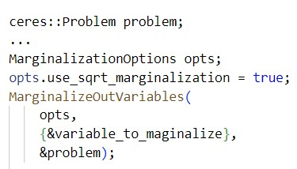
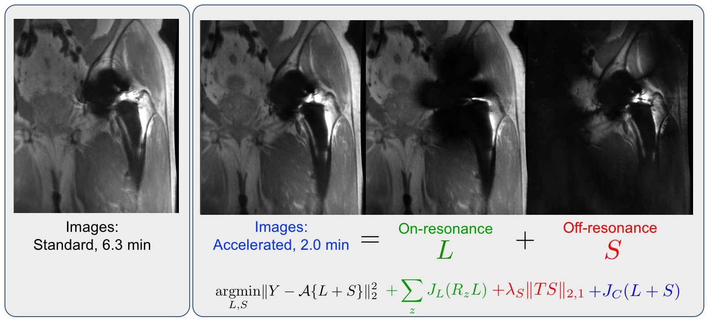

Evan Levine
About Me
I am now at Microsoft.
Education
Documents
A Practical Guide to Marginalization for Nonlinear
Least Squares on Differentiable Manifolds (New)
This report is a practical guide to marginalization for simultaneous localization and mapping (SLAM) and generic sensor fusion. In the Ceres-based implementation, users can marginalize out variables in a natural way and experiment with algorithmic choices. Users only have to implement boxplus/boxminus operators and Jacobians for each primitive manifold and marginalize in one function call. Square root marginalization and various options for pseudoinverse computation are supported.
Code available here (needs cleanup/in progress). Usage example:

Research
Interests:
Computer vision
Computational imaging, inverse problems, statistical signal processing.
Magnetic resonance imaging: sampling methods, image reconstruction, sparse and low rank models.
Selected Journal Publications:
-
E. Levine, K Stevens, C BeB, and B Hargreaves. Accelerated 3D Multispectral MRI with Robust Principal Component Analysis for Separation of On and Off-resonance Signals Magnetic Resonance in Medicine, 2017
(Article)

-
E. Levine and B Hargreaves. On-the-fly Adaptive k-Space Sampling for Linear MRI Reconstruction Using Moment-Based Spectral Analysis IEEE Transactions on Medical Imaging, 2017
(GitHub)
(IEEExplore)
(arXiv)
-
E. Levine, B. Hargreaves, B Daniel, S Vasanawala, and M Saranathan. 3D Cartesian MRI with Compressed Sensing and Variable View Sharing Using Complementary Poisson-disc Sampling Magnetic Resonance in Medicine, 2016
(GitHub)
(Article)

Selected Conference Publications:
-
E Levine and B Hargreaves. Differential Domain Analysis for 3D Cartesian Sampling. Accepted for oral presentation, Summa cum laude award Proceedings of ISMRM, Honolulu, Hawaii, April 2017
-
E Levine, K Stevens, and B Hargreaves. Accelerated 3D Multispectral MRI with Robust Principal Component Analysis for Separation of On and Off-resonance Signals. Accepted for oral presentation, Magna cum laude award Proceedings of ISMRM, Honolulu, Hawaii, April 2017
-
E Levine, M Nezamabadi, and M Martinello. High-precision Multi-view Camera Calibration Using a Rotating Stage IEEE International Conference on Image Processing (ICIP), September 2016
-
E Levine, S Vasanawala, B Hargreaves, and M Saranathan. Motion Robust Abomdinal Imaging with Complementary Poisson-disc Sampling and Retrospectively Reduced View-sharing Proceedings of ISMRM, Toronto, Canada, May 2015.
-
E Levine, B Daniel, B Hargreaves, and M Saranthan. Validation of Reduced View-sharing Compressed Sensing Reconstruction for DCE-MRI wtih Variable Fip Angle Acquisition Proceedings of ISMRM, Toronto, Canada, May 2015.
-
E Levine and B Hargreaves. An Image Domain Low Rank Model for Calibrationless Reconstruction of Images with Slowly Varying Phase Proceedings of ISMRM, Toronto, Canada, May 2015.
-
E Levine, M Saranathan, and B Hargreaves. Complementary Poisson-disc Sampling Proceedings of ISMRM, Milan, Italy, May 2014.
-
E Levine, K Sung, M Saranathan, and B Hargreaves. AMP-SENSE: Parallel Imaging Compressed Sensing with Approximate Message Passing Proceedings of ISMRM, Salt Lake City, Utah, May 2013.
-
S Hemami, F Ciaramello, S Chen, N Drenkow, D Lee, S Lee, E Levine, and McCann A, Comparing User Experiences in 2D and 3D Videoconferencing. IEEE International Conference on Image Processing (ICIP), 2012
Oral Presentations:
-
E Levine, K Sung, M Saranathan, and B Hargreaves. Fast Iterative Thresholding Methods for Combined Comrpessed Sensing Parallel Imaging 2013 ISMRM Data Sampling and Reconstruction Workshop, Sedona, AZ.
Work Experience
I am now at Microsoft working on computer vision for mixed reality. Previously, I was at Magic Leap.
I have interned in the Computational Imaging group at the Canon USA Imaging System Research Division in San Jose, CA.
Last modified: 2/5/2023